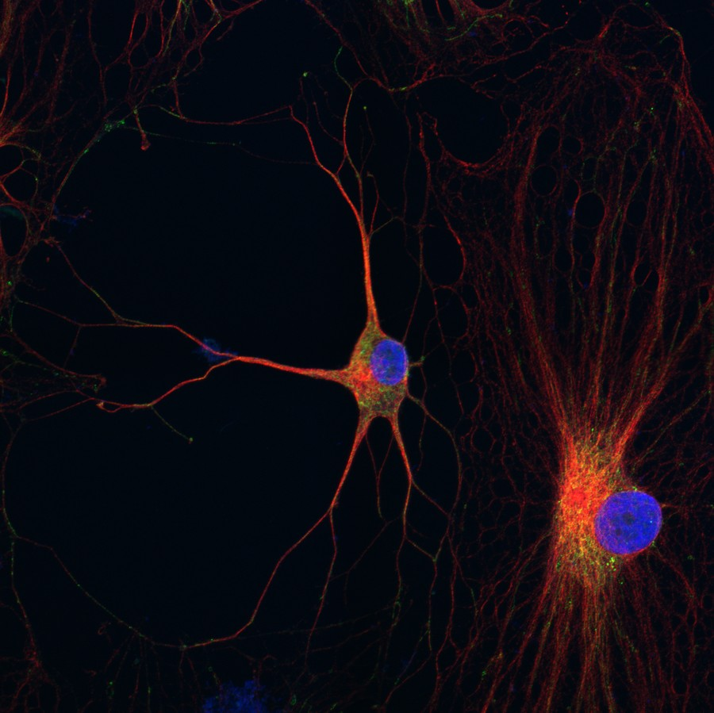
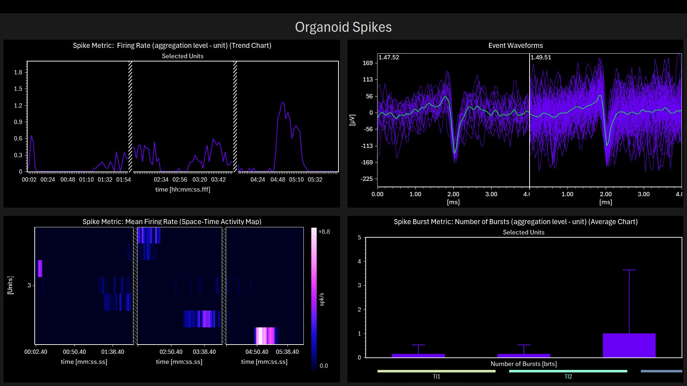

Our DPSC platform converts shed deciduous teeth into functional neuronal models of rare disease — without reprogramming, in a fraction of the time.
Induced pluripotent stem cells (iPSCs) require viral transduction of Yamanaka factors to reprogram somatic cells back to a pluripotent state — a process that takes 60–84 days, introduces epigenetic artifacts, and costs $1,500+ per vial before differentiation.
Dental pulp stem cells (DPSCs) are neural crest-derived multipotent stem cells that reside inside deciduous teeth. Because they share a developmental lineage with neurons, they differentiate directly into functional cortical-like neurons without reprogramming — in 7–14 days for initial expansion, and mature neurons in 4–6 weeks.
Critically, DPSCs retain disease-relevant epigenetic marks. They more closely resemble embryonic stem cells than iPSCs, making them superior models for imprinting disorders like Angelman syndrome, Prader-Willi, and Dup15q.

Our validated protocol reproducibly generates cortical-like neurons expressing MAP2, GABA-A, Neuroligin, and functional Na⁺/K⁺/Ca²⁺ ion channels.
Reference: Goorha & Reiter (2017). Curr Protoc Hum Genet. PMID: 28075485
Multielectrode array recordings from DPSC-derived brain organoids capture firing rate, burst patterns, and network synchrony. 4-AP seizure induction validated.
Per2:luciferase reporter system in DPSC neurons enables 5-day LumiCycle recordings of circadian period, amplitude, and phase. Validated in Prader-Willi neurons.
RNA-seq, ATAC-seq, and WGBS profiling of disease vs. control neurons. Demonstrated for Dup15q, Angelman, and PWS — revealing novel disease mechanisms.
Antisense oligonucleotide validation across multiple patient cell lines per genotype. Test ASO efficacy and toxicity in the neuronal background where the therapy will act.
Reporter constructs (luciferase, fluorescent) enable high-throughput compound screening. Circadian-correcting drugs, seizure suppressants, and mitochondrial rescue compounds.
DPSC neurons serve as the test bed for CRISPR-based UBE3A reactivation (Angelman) and other gene correction strategies in patient-specific neuronal backgrounds.
Beyond 2D neuronal cultures, PulpNeuro is developing DPSC-derived brain organoids — 3D tissue models that better capture the network complexity relevant to epilepsy and seizure biology.
Neuronal organoids are measured by MEA, enabling real-time recording of spontaneous and evoked activity. 4-AP challenge confirms epileptiform activity in disease-relevant genotypes.
In parallel, DPSC differentiation to kidney organoids (WAGR Syndrome) demonstrates the versatility of the platform beyond the CNS.
Dr. Tyler Rodriguez — Neuronal organoids & MEA electrophysiology
Dr. Ryosuke Sato — WAGR kidney organoids

| Technology | Disease Lines | Cost/Vial | Time to Neurons |
|---|---|---|---|
| ✦ PulpNeuro (DPSC) | 213+ lines · 15 diseases | $1,500–$1,800 | 7–14 days |
| CIRM / FCDI (iPSC) | 1500+ lines (CLOSED July 2025) | $1,500 | 60–84 days |
| Axol Biosciences (iPSC) | 13 nervous system diseases | $745 | 60–84 days |
| NIH/NINDS (iPSC) | 193 lines | $500–$1,500 | 60–84 days |
CIRM/FCDI closed its iPSC banking program in July 2025 due to high iPSC production costs — validating the DPSC cost and scalability advantage.